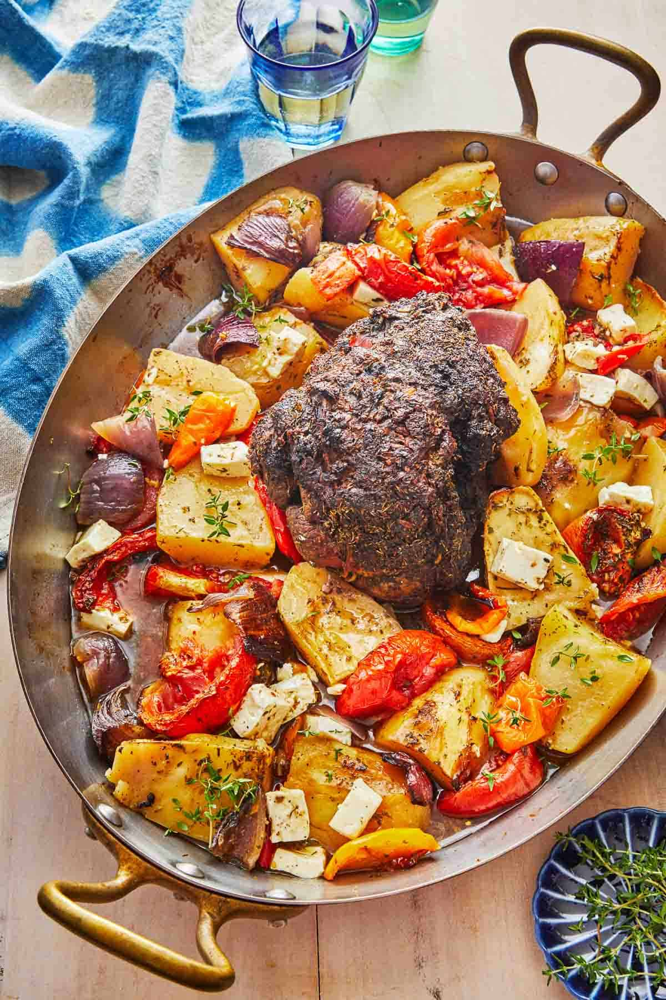

Lamb Kleftiko

Ingredients:
- 1.5 kg (3.3 lbs) lamb shoulder or leg
- 4 cloves garlic, sliced
- 1 tbsp dried oregano
- 1 tbsp dried thyme
- 1 tbsp paprika
- 1 tbsp olive oil
- Juice of 1 lemon
- 2 onions, thinly sliced
- 2 large tomatoes, sliced
- 1 cup chicken or vegetable broth
- Salt and black pepper, to taste
Instructions:
- Preheat oven to 160°C (320°F).
- Mix garlic, oregano, thyme, paprika, olive oil, and lemon juice in a bowl.
- Rub the mixture over the lamb.
- Place onions in a roasting pan, then place lamb on top.
- Arrange tomatoes around the lamb.
- Pour broth around the lamb.
- Season with salt and pepper.
- Cover tightly with foil and roast for 3-4 hours until tender.
- Remove foil, increase oven to 200°C (400°F), and roast for 15-20 minutes until golden brown.
- Let it rest, then serve with sides like roasted vegetables or potatoes.
Enjoy your easy and delicious Lamb Kleftiko!
Return to the front page